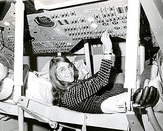
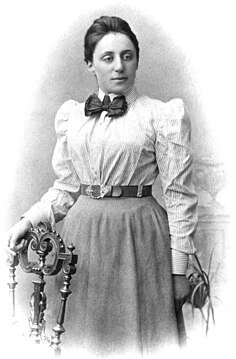
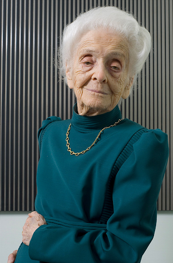

Margaret Hamilton
 Margaret Heafield Hamilton urodziła się w Paoli, w stanie Indiana. W 1954 roku ukończyła Liceum Hancock Studiowała matematykę na Uniwersytecie w Michigan. Uzyskała tytuł licencjata z matematyki i specjalizację z filozofii z Earlham College w 1958 roku. W 1964 roku dołączyłą do projektu Apollo. Do zadań Margaret należało wtedy opracowanie oprogramowania dla modułu dowodzenia Apolla, lądownika księżycowego oraz system rozpoznawania i naprawy błędów. Miała ona doświadczenie w tej dziedzinie, gdyż w 1960 roku zajmowała się oprogramowaniem do przewidywania pogody na komputerach LGP-30 i PDP-1. Podczas misji Apolla 11, niewiele minut przed lądowaniem na Księżycu wystąpił błąd, który jednak udało się zażegnać dzięki napisanego przez nią programowi, a załoga bezpiecznie powróciła. Za wkład w rozwój informatyki otrzymała NASA Exceptional Space Act Award,a 22 listopada 2016 roku prezydent USA Barack Obama odznaczył ją Prezydenckim Medalem Wolności.
Emmy Noether
 Emmy Noether urodziła się w 1882 roku w Erlangen. Miała trzech braci. 14 lipca 1903 roku Emmy zdała egzamin maturalny w Realgymnasium w Norymberdze i rozpoczęła studia na Uniwersytecie w Getyndze. W 1907 roku przedstawiła pracę doktorską na Uniwersytecie w Erlangen. W 1915 roku dołączyła do wydziału matematyki Uniwersytetu w Getyndze. W 1918 roku udowodniła fundamentalne twierdzenie, tzw. twierdzenie Noether, według którego symetrie praw fizyki są powiązane z zasadami zachowania pewnych wielkości fizycznych. Od 1922 roku była profesorem Uniwersytetu w Getyndze, ale w 1933 roku została zwolniona przez nazistów z powodu żydowskiego pochodzenia. Wyjechała do Stanów Zjednoczonych, gdzie wykładała matematykę i pracowała naukowo. Największym jej osiągnięciem w matematyce był wkład w rozwój algebry abstrakcyjnej, gdzie od jej nazwiska pochodzą nazwy: pierścienia noetherowskiego i twierdzenia Laskera–Noether. Albert Einstein określał Noether jako: “Najważniejszy twórczy geniusz matematyczny, jaki powstał od czasu rozpoczęcia wyższego szkolnictwa kobiet”.
Rita Levi-Montalcini
 Urodziła się we Włoszech, w Turynie 22 kwietnia 1909. Jej rodzicami byli: Adam Levi i Adele Montalcini. W latach 1930–1936 studiowała medycynę na Uniwersytecie Turyńskim. W 1947 wyjechała do USA na zaproszenie Washington University w St. Louis, a w latach 1956–1977 została tam profesorem. Prowadziła badania dotyczące wzrostu komórek nerwowych. Odkryła czynnik wzrostu nerwu (NGF - Nerve Grow Factor), pobudzający wzrost komórek nerwowych. W 1986 otrzymała Nagrodę Nobla za odkrycia o istotnym znaczeniu dla zrozumienia mechanizmów regulujących wzrost komórek i narządów. W 1987 została odznaczona Krzyżem Wielkim Orderu Zasługi Republiki Włoskiej. Została mianowana dożywotnim senatorem we Włoszech 1 sierpnia 2001 roku przez prezydenta Carlo Azeglio Ciampi. Zmarła 30 grudnia 2012 roku w Rzymie.
Ada Lovelace
 Ada Lovelace urodziła się 10 grudnia 1815 w Londynie. Była jedynym ślubnym dzieckiem lorda Byrona, jednego z najbardziej znanych brytyjskich poetów. Ada także pragnęła zajmować się poezją. Jej matka jednak chciała aby zajmowała się ona matematyką i fizyką. Po poznaniu Charlesa Babbage’a w 1833, zafascynowana jego pracą zaczęła studiować zaawansowaną matematykę. W czasie swojej prezentacji w 1940 na Uniwersytecie Turyńskim, Babbage przedstawił informacje o maszynie analitycznej, które po francusku spisał inżynier Luigi Menabrea. W 1942 roku Charles Wheatstone (znajomy Babbage’a) zlecił Adzie przetłumaczenie artykułu na angielski. Przygotowany przez nią materiał był 3 razy dłuższy od oryginału, zawierał dokładne tłumaczenie oraz wiele dodatkowych informacji i poprawek. W notatkach zawarty był także pierwszy algorytm, który miał być wykorzystany na maszynie analitycznej, co czyni ją pierwszą programistką w historii. Choć wielu naukowców ma co do tego zastrzeżenia (z jej korespondencji z Babbage’em wynika, że nie miała wystarczającej wiedzy by to zrobić), to wciąż jest ona inspiracją dla kobiet w branży informatycznej. Dodatkowo, w drugi wtorek października obchodzony jest Dzień Ady Lovelace.
Ada Lovelace urodziła się 10 grudnia 1815 w Londynie. Była jedynym ślubnym dzieckiem lorda Byrona, jednego z najbardziej znanych brytyjskich poetów. Ada także pragnęła zajmować się poezją. Jej matka jednak chciała aby zajmowała się ona matematyką i fizyką. Po poznaniu Charlesa Babbage’a w 1833, zafascynowana jego pracą zaczęła studiować zaawansowaną matematykę. W czasie swojej prezentacji w 1940 na Uniwersytecie Turyńskim, Babbage przedstawił informacje o maszynie analitycznej, które po francusku spisał inżynier Luigi Menabrea. W 1942 roku Charles Wheatstone (znajomy Babbage’a) zlecił Adzie przetłumaczenie artykułu na angielski. Przygotowany przez nią materiał był 3 razy dłuższy od oryginału, zawierał dokładne tłumaczenie oraz wiele dodatkowych informacji i poprawek. W notatkach zawarty był także pierwszy algorytm, który miał być wykorzystany na maszynie analitycznej, co czyni ją pierwszą programistką w historii. Choć wielu naukowców ma co do tego zastrzeżenia (z jej korespondencji z Babbage’em wynika, że nie miała wystarczającej wiedzy by to zrobić), to wciąż jest ona inspiracją dla kobiet w branży informatycznej. Dodatkowo, w drugi wtorek października obchodzony jest Dzień Ady Lovelace.